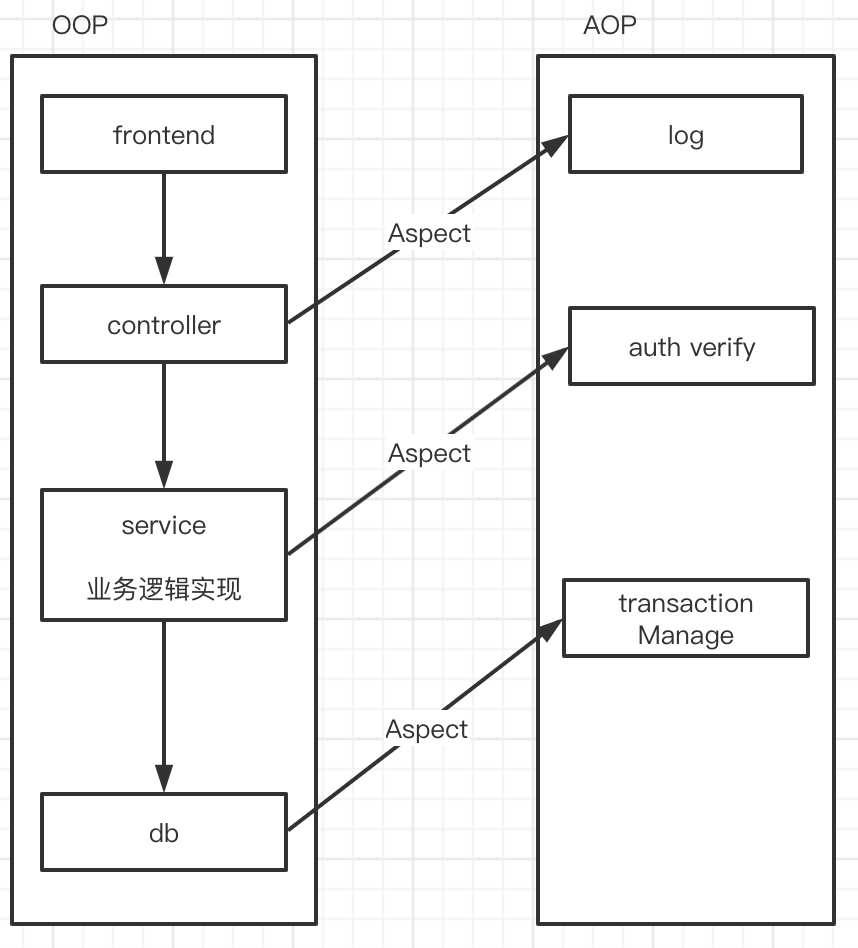
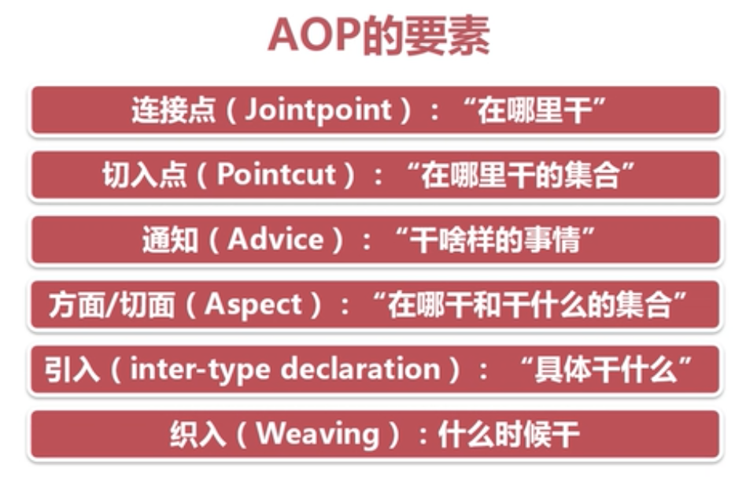
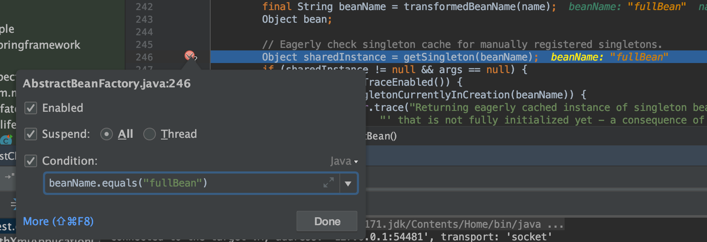
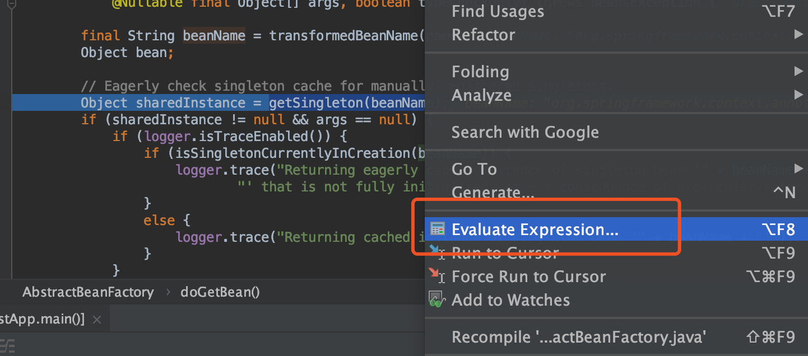
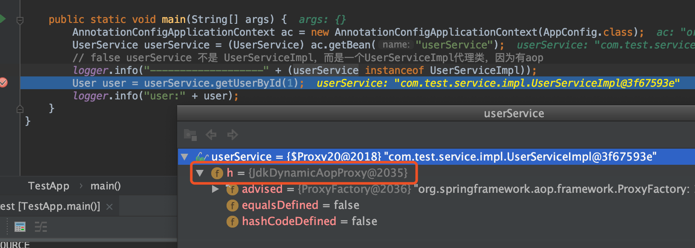
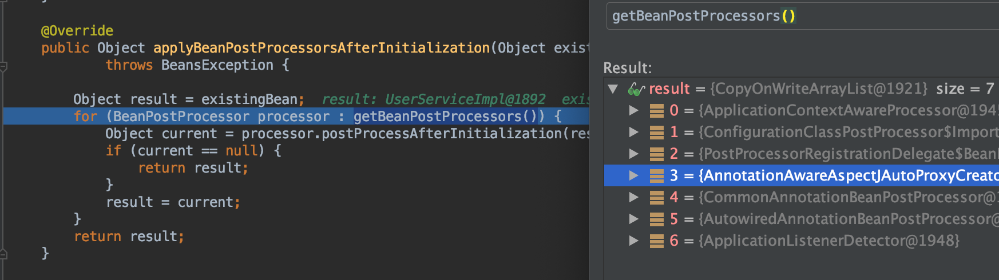
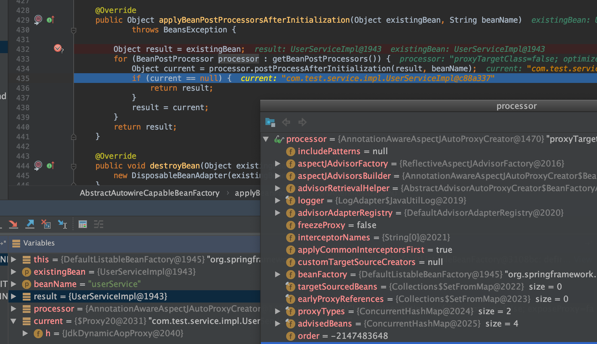
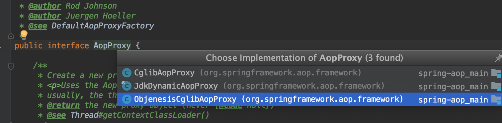

Spring AOP
AOP的各种概念

- aop（aspect-oriented programming）面向切面编程
- aop是oop的补充和完善，是相互配合关系
- aop把软件系统分为两个部分：核心关注点和横切关注点
为什么需要aop？
公共行为：权限安全，日志记录，事务等功能；这些公共行为与业务逻辑耦合的
- aop可以纵向处理
- 可以将公共行为与业务逻辑分离，解耦合
aop应用场合？横切性问题？
AOP用来封装横切关注点，具体可以在下面的场景中使用
- Authentication 权限
- Caching 缓存
- Context passing 内容传递
- Error handling 错误处理
- Lazy loading 懒加载
- Debugging 调试
- logging, tracing, profiling and monitoring 日志 记录跟踪 优化 校准
- Performance optimization 性能优化
- Persistence 持久化
- Resource pooling 资源池
- Synchronization 同步
- Transactions 事务
aop代码例子
Spring aop
Spring aop 术语

- Aspect
通常一个类@Aspect
- Join point(连接点)
A point during the execution of a program, such as the execution of a method or the handling of an exception. In Spring AOP, a join point always represents a method execution.
通常就是一个执行的方法
- Advice(增强器)
Action taken by an aspect at a particular join point. Different types of advice include “around”, “before” and “after” advice. (Advice types are discussed later.) Many AOP frameworks, including Spring, model an advice as an interceptor and maintain a chain of interceptors around the join point.
在特定的Join point增强
1. Before：前置通知，在一个方法执行前被调用
2. After：在方法执行之后调用的通知，无论方法执行是否成功
3. AfterReturn：仅当方法成功完成后执行的通知
4. AfterThrowing：在方法抛出异常退出时执行的通知
5. Around：在方法执行之前和之后调用的通知
- Pointcut(切点)
A predicate that matches join points. Advice is associated with a pointcut expression and runs at any join point matched by the pointcut (for example, the execution of a method with a certain name). The concept of join points as matched by pointcut expressions is central to AOP, and Spring uses the AspectJ pointcut expression language by default.
简单认为是：某些特定的join point的集合
Introduction
Declaring additional methods or fields on behalf of a type. Spring AOP lets you introduce new interfaces (and a corresponding implementation) to any advised object. For example, you could use an introduction to make a bean implement an IsModified interface, to simplify caching. (An introduction is known as an inter-type declaration in the AspectJ community.)
Target object（目标对象，被代理的对象，原对象）
An object being advised by one or more aspects. Also referred to as the “advised object”. Since Spring AOP is implemented by using runtime proxies, this object is always a proxied object.
增强对象(新对象，代理对象)也叫this，而被增强的那个原始对象就是Target object
Jdk动态代理：this 和 target是实现接口关系，this和target不相同
cglib代理：this 是 target的子类，this和target相同
- AOP proxy
An object created by the AOP framework in order to implement the aspect contracts (advise method executions and so on). In the Spring Framework, an AOP proxy is a JDK dynamic proxy or a CGLIB proxy.
- Weaving
linking aspects with other application types or objects to create an advised object. This can be done at compile time (using the AspectJ compiler, for example), load time, or at runtime. Spring AOP, like other pure Java AOP frameworks, performs weaving at runtime.
Spring aop 通知类型
- 前置通知（Before advice）：在某连接点之前执行的通知，但这个通知不能阻止连接点之前的执行流程（除非它抛出一个异常）。
- 后置通知（After returning advice）：在某连接点正常完成后执行的通知：例如，一个方法没有抛出任何异常，正常返回。
- 异常通知（After throwing advice）：在方法抛出异常退出时执行的通知。
- 最终通知（After (finally) advice）：当某连接点退出的时候执行的通知（不论是正常返回还是异常退出）。
- 环绕通知（Around Advice）：包围一个连接点的通知，如方法调用。这是最强大的一种通知类型。环绕通知可以在方法调用前后完成自定义的行为。它也会选择是否继续执行连接点或直接返回它自己的返回值或抛出异常来结束执行。
环绕通知是最常用的通知类型。和AspectJ一样，Spring提供所有类型的通知，我们推荐你使用尽可能简单的通知类型来实现需要的功能。例如，如果你只是需要一个方法的返回值来更新缓存，最好使用后置通知而不是环绕通知，尽管环绕通知也能完成同样的事情。用最合适的通知类型可以使得编程模型变得简单，并且能够避免很多潜在的错误。比如，你不需要在JoinPoint上调用用于环绕通知的proceed()方法，就不会有调用的问题。
在Spring 2.0中，所有的通知参数都是静态类型，因此你可以使用合适的类型（例如一个方法执行后的返回值类型）作为通知的参数而不是使用Object数组。
通过切入点匹配连接点的概念是AOP的关键，这使得AOP不同于其它仅仅提供拦截功能的旧技术。 切入点使得通知可以独立对应到面向对象的层次结构中。例如，一个提供声明式事务管理 的环绕通知可以被应用到一组横跨多个对象的方法上（例如服务层的所有业务操作）。
断点调试技巧
- 断点加条件

- Evaluate，断点评估运行

目标对象 =》代理对象

- debug 可以定位到
initializeBean方法后，返回了代理对象
// Initialize the bean instance.
Object exposedObject = bean;
try {
// 2. 填充bean的属性:即这里要完成bean依赖处理
populateBean(beanName, mbd, instanceWrapper);
// 3. bean的initialize,beanPostProcessor等
// 执行完如下一句，exposedObject 是JdkDynamicAopProxy对象
exposedObject = initializeBean(beanName, exposedObject, mbd);
}
catch (Throwable ex) {
if (ex instanceof BeanCreationException && beanName.equals(((BeanCreationException) ex).getBeanName())) {
throw (BeanCreationException) ex;
}
else {
throw new BeanCreationException(
mbd.getResourceDescription(), beanName, "Initialization of bean failed", ex);
}
}
- 继续debug在
applyBeanPostProcessorsAfterInitialization方法返回了代理对象

- 在某个
PostProcessor作用后肯定会变成代理对象

/**
* Create a proxy with the configured interceptors if the bean is
* identified as one to proxy by the subclass.
* @see #getAdvicesAndAdvisorsForBean
*/
@Override
public Object postProcessAfterInitialization(@Nullable Object bean, String beanName) {
if (bean != null) {
Object cacheKey = getCacheKey(bean.getClass(), beanName);
if (!this.earlyProxyReferences.contains(cacheKey)) {
return wrapIfNecessary(bean, beanName, cacheKey);
}
}
return bean;
}
默认jdk动态代理(可以配置使用cglib代理)
Object proxy = createProxy(bean.getClass(), beanName, specificInterceptors, new SingletonTargetSource(bean));

附：@EnableAspectJAutoProxy(proxyTargetClass=true) 使用CGLib代理, 创建AopProxy
public class DefaultAopProxyFactory implements AopProxyFactory, Serializable {
@Override
public AopProxy createAopProxy(AdvisedSupport config) throws AopConfigException {
if (config.isOptimize() || config.isProxyTargetClass() || hasNoUserSuppliedProxyInterfaces(config)) {
Class<?> targetClass = config.getTargetClass();
if (targetClass == null) {
throw new AopConfigException("TargetSource cannot determine target class: " +
"Either an interface or a target is required for proxy creation.");
}
// 目标类是一个接口则会使用`JdkDynamicAopProxy`创建代理对象
if (targetClass.isInterface() || Proxy.isProxyClass(targetClass)) {
return new JdkDynamicAopProxy(config);
}
return new ObjenesisCglibAopProxy(config);
}
else {
return new JdkDynamicAopProxy(config);
}
}
}
- 如果目标对象有实现接口，则使用 JDK 代理，反之使用 CGLIB (JDK 代理是基于接口的)
- 如果目标类没有实现接口，且 class 为 final 修饰的，则不能进行 Spring AOP